I've decided to give Zsh a try, and needed to configure the prompt. For the good of the world, I'm posting a few screenshots of themes packaged with Zsh on, just to be complete, a white and a black background.
You can get a list of available prompts by using prompt -l. To enable a prompt, for example adam1, simply type prompt adam1. The list I've got in version 5.0.0 of zsh is: adam1 adam2 bart bigfade clint elite2 elite fade fire off oliver pws redhat suse walters zefram. You can also get a preview of the prompts using the command prompt -p. However, because this does not show the bavior in a git repo, I decided to make screenshots for the default prompts that show of that behavior.
adam1 prompt
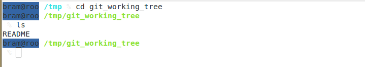 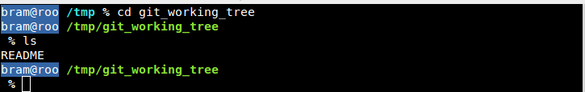
adam2 prompt
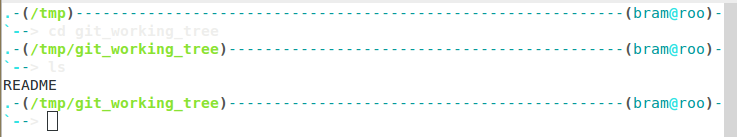 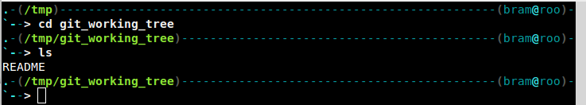
bart prompt
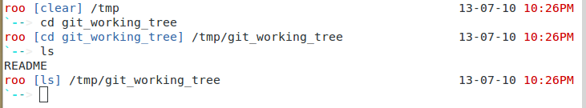 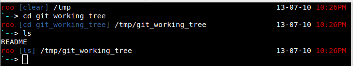
bigfade prompt
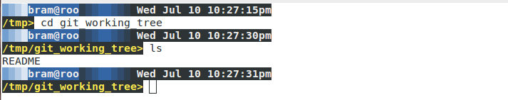 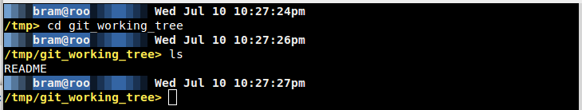
clint prompt
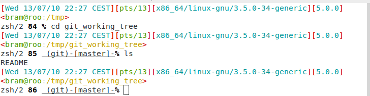 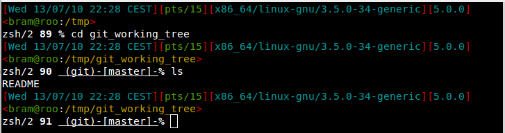
elite2 prompt
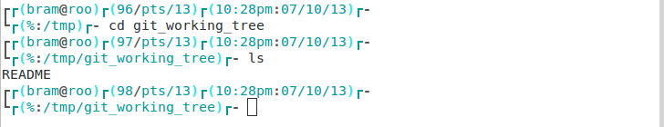 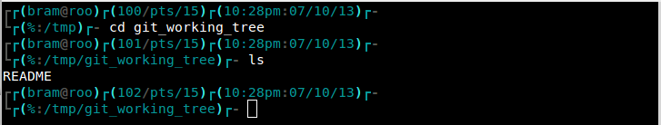
elite prompt
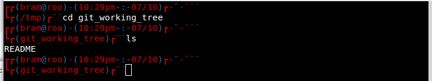
fade prompt
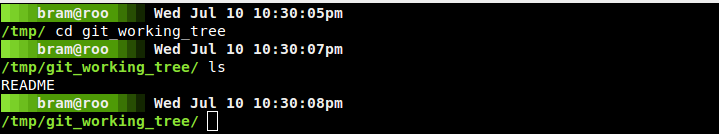
fire prompt
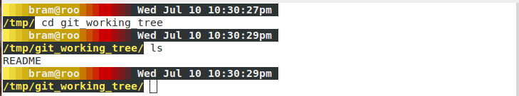 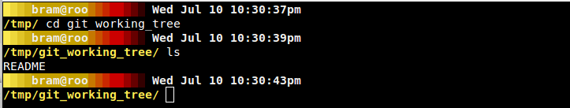
off prompt
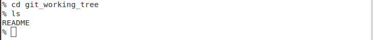 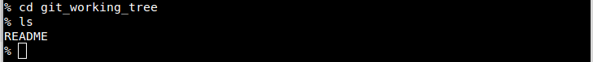
oliver prompt
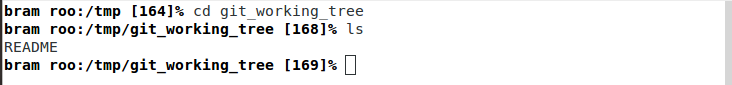 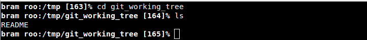
pws prompt
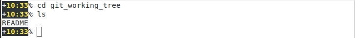
redhat prompt
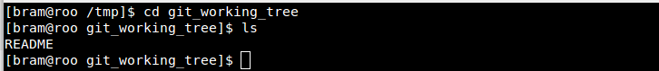
suse prompt
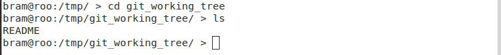 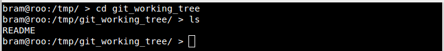
walters prompt
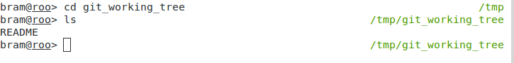 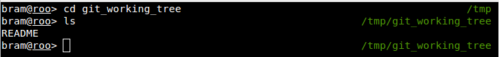
zefram prompt
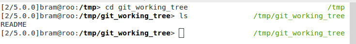 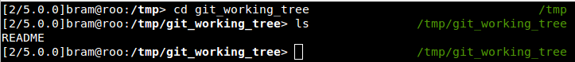
Hope this helps you in choosing a prompt. If not, you can always just dive into the syntax and edit your own prompt.